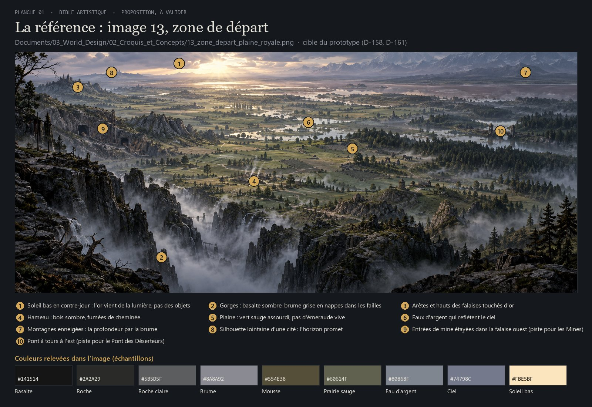
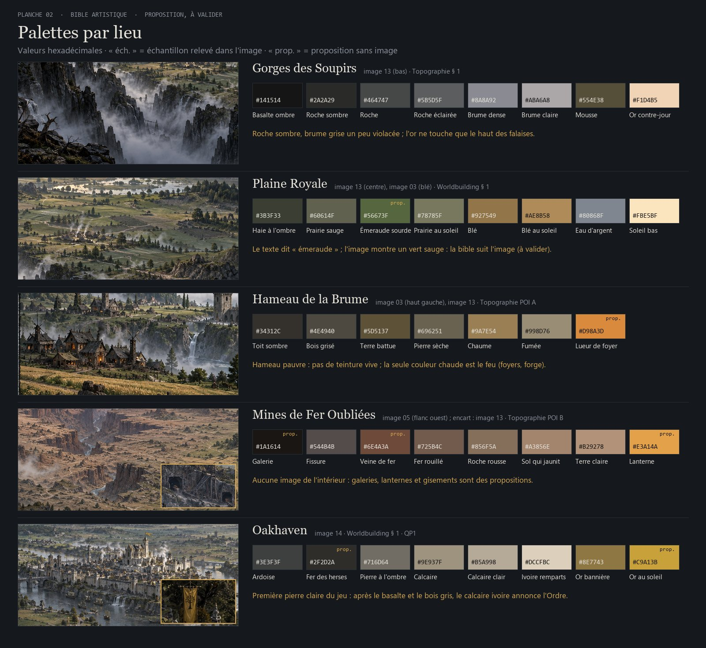
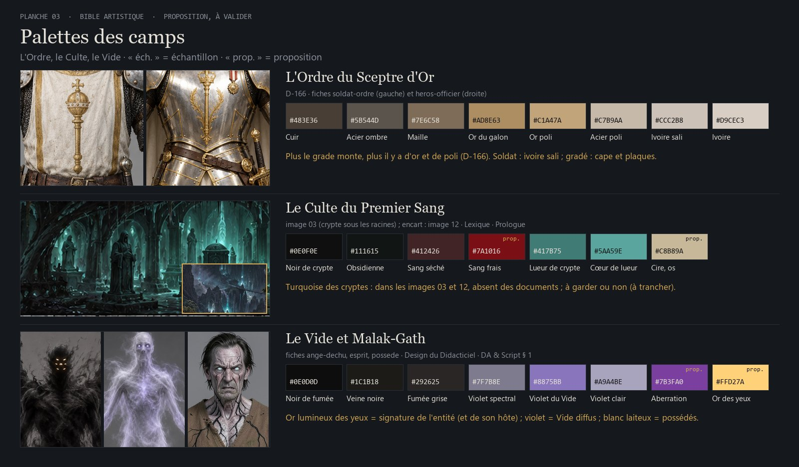
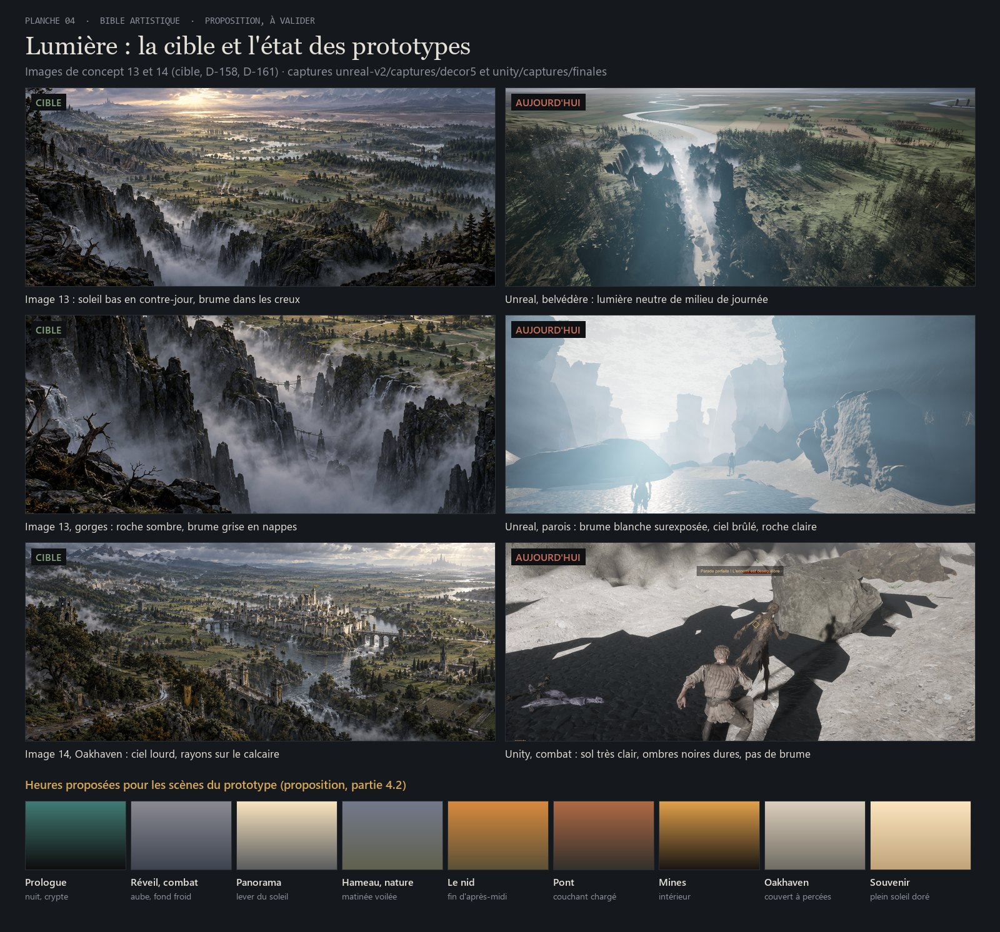
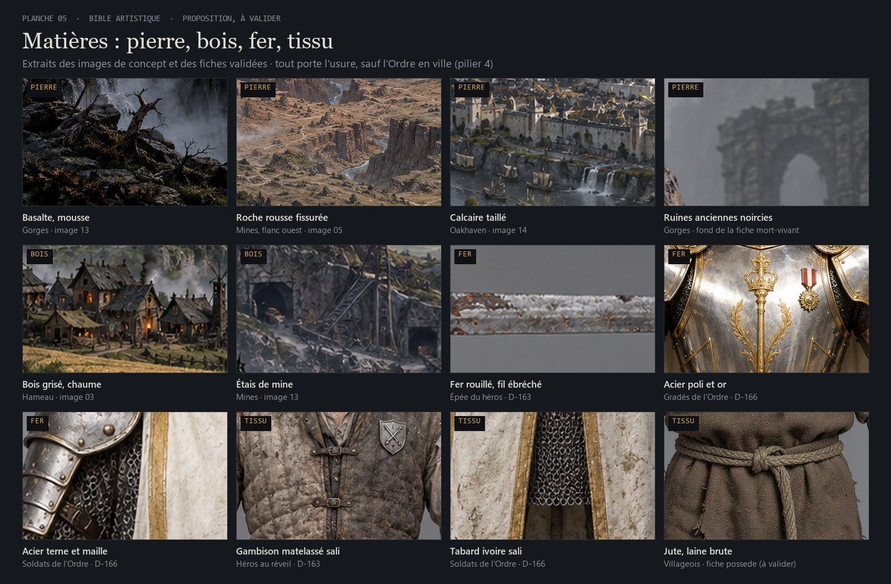
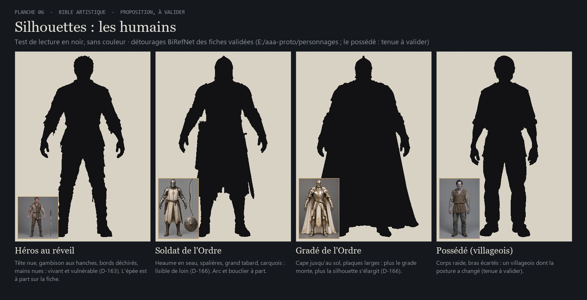
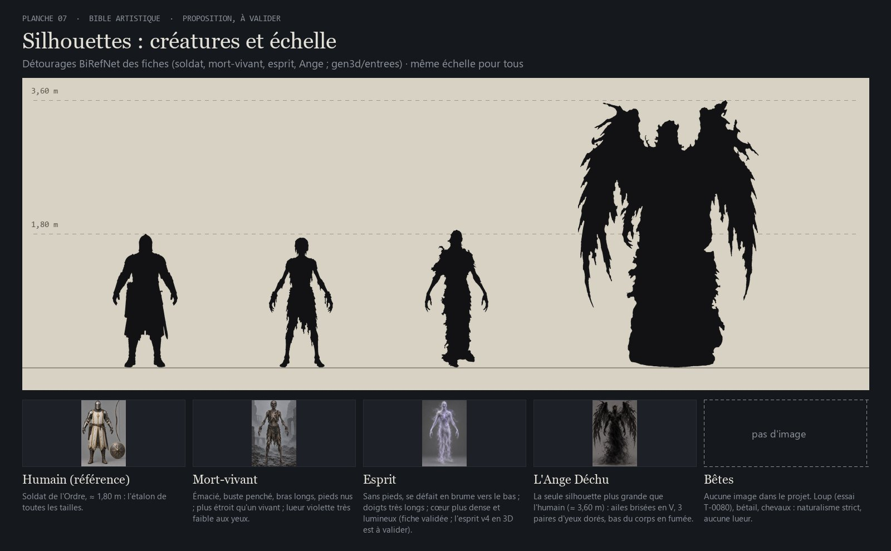
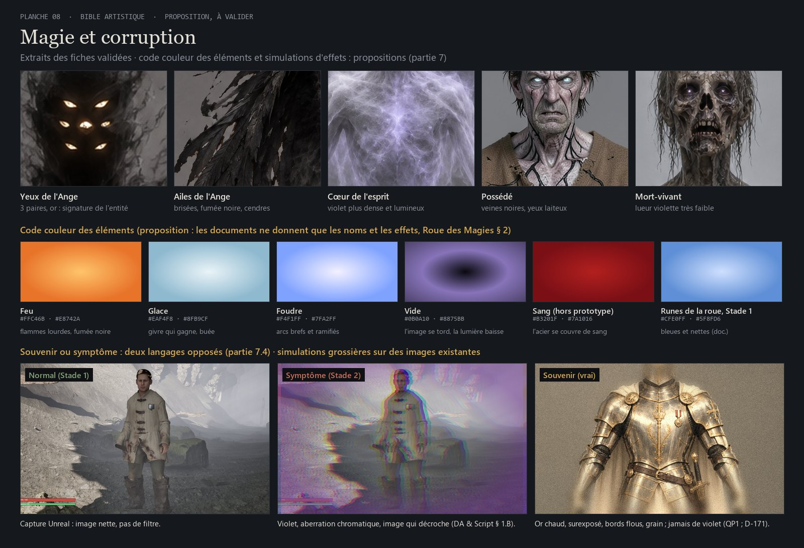
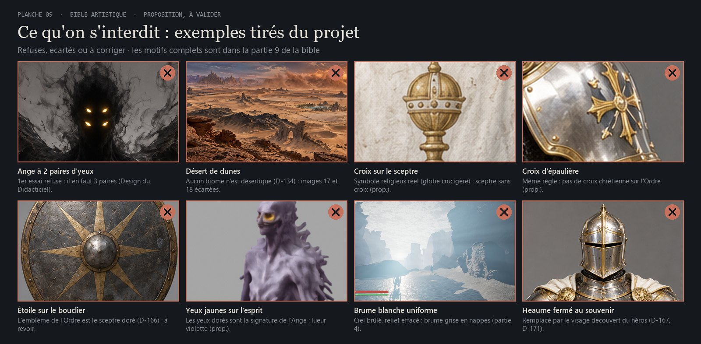
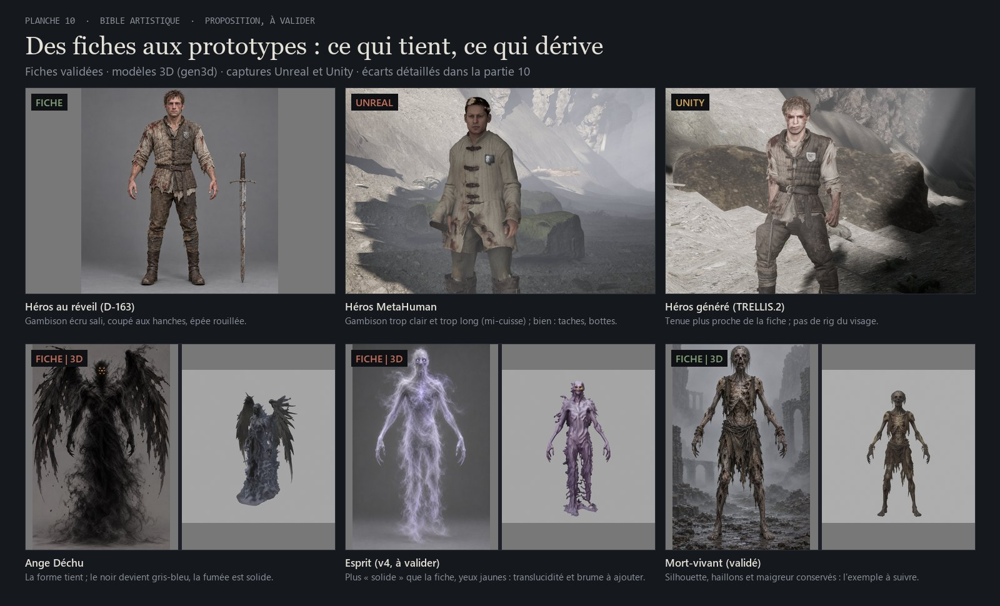

Les règles visuelles proposées pour le prototype des investisseurs : piliers, palettes par lieu et par camp, lumière, matières, silhouettes, magie, interface et interdits. Elles servent quel que soit le moteur retenu, et sont illustrées par les images du projet.
Proposition, à valider par le directeurCe qui vient des documents ou des décisions est cité (D-xx, titre du document) ; le reste porte la marque prop.. Aucune image n'a été générée : les planches sont des extraits annotés des images de concept, des fiches validées, des modèles 3D et des captures des deux prototypes.
Les images de concept sont beaucoup plus sourdes que les mots des documents : le « vert émeraude » et l'« or éclatant » de la Plaine Royale (Worldbuilding) sont, dans l'image 13, un vert sauge et un or de contre-jour pâle. Le prototype doit ressembler aux images (D-158) : la bible suit les images.
Matières vraies, proportions humaines, lumière physique. Le fantastique n'entre que par l'entité et le Vide (D-158 ; Pitch).
Gris, sauges, bruns, ivoires. L'or au pouvoir (l'Ordre, les yeux de l'Ange), le violet et le noir au Vide, le rouge au sang.
Le fond des gorges est froid et bouché, le haut des falaises doré : sortir des gorges, c'est passer de l'ombre à la lumière prop.
Rouille, boue, tissus déchirés, bois grisé. Seul l'Ordre, en ville et chez les gradés, est propre et poli : ce contraste dit sa puissance (D-166).
Veines noires, yeux luisants, vieillissement : la corruption se voit d'abord sur le héros, puis sur l'écran (Lore, Héros ; Stades des Symptômes).
La zone de départ vue depuis les gorges : c'est la cible du prototype (D-158, D-161). Deux pistes y apparaissent : des entrées de mine étayées dans la falaise ouest (repère 9) et un pont à tours à l'est (repère 10).

Documents/03_World_Design/02_Croquis_et_Concepts/13_zone_depart_plaine_royale.pngValeurs relevées dans les images par un petit script (processeur seul), sauf celles marquées prop.. Règle proposée : dans un lieu, les accents couvrent moins de 5 % de l'image.

#141514#2A2A29#464747#5B5D5F#8A8A92#ABA6A8#554E38#F1D4B5#3B3F33#60614F#78785F#56673F#927549#AE8B58#80868F#74798C#FBE5BF#34312C#4E4940#5D5137#696251#9A7E54#998D76#D98A3DHameau pauvre : pas de teinture vive ; la seule couleur chaude est celle du feu (foyers, forge du forgeron).
#1A1614#544B4B#6E4A3A#725B4C#856F5A#A3856E#B29278#E3A14A#3E3F3F#2F2D2A#716D64#9E937F#B5A998#DCCFBC#8E7743#C9A13BPremière pierre claire du jeu. Les bannières de l'image 14 portent un arbre, pas le sceptre : armoiries de la ville à côté de l'emblème de l'Ordre ? (à valider).

E:\aaa-proto\personnages\ et images 03, 12#483E36#5B544D#7E6C58#AD8E63#C1A47A#C7B9AA#CCC2B8#D9CEC3Plus le grade monte, plus il y a d'or et de poli (D-166). Les déserteurs gardent la tenue du soldat, arrachée, boueuse, sans or visible prop.
#0E0F0E#111615#412426#7A1016#C8B89A#417B75#5AA59EÀ trancher : les images 03 et 12 éclairent les cryptes d'un vert-bleu qu'aucun document ne cite. Proposition : le garder pour les cryptes du Culte, c'est la « lueur spectrale » du prologue (acte III), et le prologue court est dans le prototype (D-177).
#0E0D0D#1C1B18#292625#7F7B8E#8875BB#A9A4BE#7B3FA0#FFD27AL'or lumineux des yeux est la signature de Malak-Gath : seuls l'Ange et son hôte ont des yeux dorés prop. Esprits et morts-vivants : lueur violette ; possédés : yeux blanc laiteux (fiche possede). Le « Violet du Vide » #8875BB a été relevé dans l'énergie des Pics Célestes (image 03, en bas à droite), c'est-à-dire la zone du point 4 à valider : si le cyan revient aux Pics, la valeur peut rester ou être reprise sur le violet de la Forêt Sauvage (image 12, #8F81AB).
#CFC6B4#8FA3B8#4A4E55#3A2E25#9C6A3CVeilleurs de l'Aube (Ferme Fortifiée, D-177) : pas d'or, pour ne pas les confondre avec l'Ordre. Cartel de la Brume (agent de l'auberge, voie B) : vêtements de voyage discrets.

unreal-v2\captures\decor5 et unity\captures\finales| Scène (D-177) | Heure proposée | Lumière et couleurs |
|---|---|---|
| Prologue court | Nuit, crypte | Cierges. Structure du Prologue cite une « lueur spectrale » (acte III) et la « lueur divine/démoniaque » des yeux du héros (acte IV), sans couleur : turquoise si ce choix est retenu (point 3 à valider), or pour les yeux prop. (point 8) |
| Réveil, reflet, premier combat | Aube | Fond froid gris-bleu, brume dense, seul le haut des falaises est doré ; eau du reflet sombre et calme |
| Horde, apparition de l'Ange | Même heure | Pendant l'éclair, la lumière est aspirée : seuls restent les yeux dorés (Lexique : le Fléau du Silence absorbe « le son et la lumière ») |
| Sortie, panorama, patrouille | Lever du soleil | L'image 13 : contre-jour doré face au joueur |
| Hameau, nature, Ferme des Veilleurs | Matinée voilée | Ciel gris bleu, ombres douces, fumées ; pluie battante en variante (Worldbuilding) |
| Le nid | Fin d'après-midi | Lumière rasante orangée, ombres longues |
| Pont des Déserteurs, premier souvenir | Couchant chargé | Brume de rivière, braseros des déserteurs |
| Mines de Fer Oubliées | Intérieur | Vraie obscurité, lanternes chaudes ; on lit l'espace par les flaques de lumière |
| Route, portes, grand-place d'Oakhaven | Jour couvert à percées | L'image 14 : ciel lourd, rayons sur le calcaire, bannières or |
| Deuxième souvenir (médaille) | Plein soleil | Surexposé, doré, « rutilant » (QP1) |
Toutes ces heures sont des propositions : le cycle jour-nuit et la météo du prototype ne sont pas tranchés.
Matériaux physiques standard, textures d'abord libres de droits CC0 (Poly Haven, ambientCG ; D-160, D-161), lisibles par Unreal et par Unity (D-158). Dans les textures de couleur, ni noir pur ni blanc pur prop.

Test proposé : chaque personnage doit se reconnaître en silhouette noire, sans couleur, à la taille où on le voit en combat. Tous les PNJ humains passent par MetaHuman, chacun différent, dans des valeurs humaines plausibles (D-179).

| Qui | Ce qui doit se lire | Source |
|---|---|---|
| Héros au réveil (homme ou femme) | Tête nue, gambison aux hanches, bords déchirés : vivant et vulnérable ; épée rouillée tenue bas prop. (posée à part sur la fiche) | D-163 |
| Soldat de l'Ordre | Heaume en seau, spalières, grand tabard ivoire, arc ou bouclier rond | D-166 |
| Gradé, Général | Cape jusqu'au sol, plaques polies ; plus le grade monte, plus la silhouette s'élargit ; le Général sur un destrier blanc | D-166 ; QP1 |
| Héros dans le souvenir | Armure d'officier, tête nue, visage choisi au reflet | D-167, D-171 |
| Déserteurs | La silhouette du soldat cassée : heaume ôté, tabard arraché, bandages, boiterie | Topographie § 5 ; prop. |
| Villageois et PNJ qui parlent | Voûtés, laine, capuches ; un accessoire par métier : tablier et marteau du forgeron, houlette de l'éleveur, bâton du chef, pioche et marques de fers de Brutus le Brisé | Lexique ; prop. |
| Possédé | Villageois raidi, bras écartés, veines noires, yeux blanc laiteux | D-03 ; fiche à valider |

E:\aaa-proto\gen3d\rendus\)prompts.md n° 5). Au Stade 3 : taille humaine, reflet du héros en armure d'officier carbonisée, six ailes de fumée, sans ombre ni bruit de pas (DA & Script § 1.C ; D-60).
| Élément | Cœur | Halo | Signe visuel prop. |
|---|---|---|---|
| Feu | #FFC46B | #E8742A | Flammes lourdes, fumée noire, braises (le soufre du Lexique) |
| Glace | #EAF4F8 | #8FB9CF | Givre qui gagne la surface, buée |
| Foudre | #F4F1FF | #7FA2FF | Arcs brefs et ramifiés |
| Vide | #0B0A10 | #8875BB | L'image se tord autour d'un point noir, la lumière baisse (« siphonnage », Roue § 2) ; sifflement strident (Lexique) |
| Sang (hors prototype) | #B3201F | #7A1016 | L'acier se couvre de sang |
| Stade | Corps du héros | Monde et écran | Interface |
|---|---|---|---|
| 1 : Murmures | Veines noires quand l'entité fait canaliser l'énergie (Design du Didacticiel) ; qu'elles s'effacent ensuite, et les yeux dorés pendant le sort : prop. | Voix seule ; l'Ange en éclairs | Propre, runes bleues (Roue § 3) |
| 2 : Visions | Veines qui restent au cou et aux mains prop. ; cheveux gris, rides (Vieillissement) | Aberration chromatique violacée quand le Mana est vide ; reflets de l'acier qui montrent la Capitale détruite (DA & Script § 1.B) | Icônes qui tremblent et grésillent |
| 3 : Illusion | Yeux luisants (Lore Suprême) | L'Ange à taille humaine, sans ombre ni pas | Roue en veines noires coulantes ; journal couvert d'encre noire luisante (Interface des Quêtes) |
Souvenir ou symptôme. Les flashs de souvenir sont de vrais souvenirs, à ne pas confondre avec les symptômes (Stades des Symptômes ; D-155). Proposition : le souvenir est chaud, doré, surexposé, flou sur les bords, sans aucun violet ; le symptôme est violet et noir, avec aberration chromatique.
Les documents veulent des interfaces diégétiques : carte en parchemin à l'encre, fausse tant qu'on n'a pas exploré (Brouillard de Guerre) ; journal en carnet de cuir écrit à la main (Interface des Quêtes) ; roue des magies radiale et transparente (Roue). Ils rejettent « les menus modernes rigides ». Proposition : les objets du monde sont dessinés comme de vrais objets ; le HUD est minimal, sans cadre, et s'efface hors combat. Les maquettes T-0083 partent de cette partie.
Points de vie #A33A2E · Endurance #7FA36A (vert 🟢, Combat Hybride) · Mana #5F8FD6 (bleu 🔵) · verrouillage : le losange or des deux prototypes. Réplique : Design du Didacticiel.
Trouver qui a porté cet insigne.
Sauver la fille du trappeur des griffes du loup
[ÉCHEC - Le temps a manqué]
[Laisse le loup la dévorer. Son sang nourrira notre puissance.]
Quête échouée barrée de rouge et annotation de l'entité en encre noire luisante au Stade 3 : exemples tirés de Interface des Quêtes § 2 et § 3 ; nom du héros à l'écrit (D-155).
Quadrants et ralenti de 50 % en solo : Roue § 1 et 2. Runes bleues et nettes au Stade 1, tremblantes au Stade 2, veines noires au Stade 3 (Roue § 3). L'élément survolé prend sa couleur prop.
Toutes sous licence libre SIL Open Font License (Google Fonts) ; licences à revérifier avant la production. Tailles : pas de texte sous 28 px en 1080p ; sous-titres à 36 px au moins, sur bandeau semi-opaque, avec une option de taille.
Au trait d'encre, une seule couleur : ivoire au repos, or quand elles sont actives, rouge pour le danger ; lisibles à 32 px ; pas d'icônes plates colorées ni d'emoji.
#15181C#E4E1D9#8B929B#D4A857#C7715C#D8C8A4#1F1A16#8E2A1F
Des pistes pour les prochaines passes, pas des reproches : les deux mini-tranches visaient le jeu avant le décor (D-168).

| Écart | Où | Cible |
|---|---|---|
| Roche du fond des gorges claire | Unreal et Unity | Basalte sombre #2A2A29 |
| Brume blanche surexposée, ciel brûlé | Unreal | Brume gris-violet, ciel avec dégradé |
| Lumière neutre de milieu de journée au belvédère | Unreal | Contre-jour doré de l'image 13 |
| Ombres noires très dures, sans brume | Unity | Ombres froides adoucies par la brume |
| Gambison trop clair et trop long | Héros Unreal (Unity plus proche) | Écru sali, aux hanches (D-163) |
| Esprit en aplat lavande ; esprit v4 aux yeux jaunes | Unreal ; modèle 3D | Translucide, cœur lumineux, lueur violette |
| Ange gris-bleu, fumée solide | Modèle 3D | Noir de fumée, fumée en particules |
| Étoile sur le bouclier du soldat | Fiche et modèle 3D | Sceptre doré (D-166) |
| Barres rouge et vert vifs, pleine opacité | HUD des deux | Jauges fines de la partie 08 |
Contradictions signalées, non tranchées, et propositions de cette bible.
#8875BB de cette bible a été relevé dans ce violet des Pics : à trancher avec ce point.Texte complet de la bible, avec toutes les citations : D:\aaa-game\.equipe\prototype\bible-artistique.md.
Documents/03_World_Design/02_Croquis_et_Concepts/ (images 03, 05, 12, 13, 14, 17, 18)
E:\aaa-proto\personnages\ (fiches validées, D-163, D-166 ; LISEZMOI.md, prompts.md)
E:\aaa-proto\gen3d\rendus\ et RAPPORT.md (modèles 3D, D-164, D-165) ·E:\aaa-proto\echange\LISEZMOI.md
E:\aaa-proto\unreal-v2\captures\decor5\ et combat\ · E:\aaa-proto\unity\captures\finales\
.equipe/decisions.md (D-155 à D-180) · .equipe/etudes/cout-proto/inventaire.md